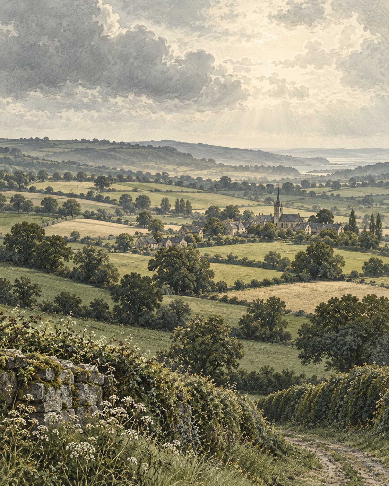
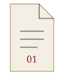

Normandie · Histoire & patrimoine
Poche de
Falaise-Chambois.
Un territoire, une histoire,
une mémoire à transmettre.
Faire connaître les lieux, préserver les témoignages et transmettre la mémoire. Cette présentation du label est une base de travail à compléter.
Version de présentation · contenus provisoires

 Symbole proposé
Symbole proposé01 / Le territoire et son histoire
Des lieux marqués par l’Histoire.
En août 1944, la poche de Falaise-Chambois est au cœur des derniers combats de la bataille de Normandie.
Les forces américaines, britanniques, canadiennes, françaises et polonaises participent à ces combats. La mémoire du territoire doit aussi faire une place aux populations civiles, à leurs épreuves et à leurs témoignages.
Ce texte introductif sera complété par un récit documenté et des archives locales.
Références complémentaires à renseigner.

02 / L’origine du label
Donner un nom.
Faire vivre la mémoire.
Le projet de présentation du label s’articule autour de trois objectifs : préserver la mémoire, la transmettre aux générations suivantes et valoriser le territoire.
La dénomination désigne le territoire historique. Le cadre du label et le rôle de l’insigne restent à documenter. Ces trois éléments ne doivent pas être considérés comme ayant le même statut.
Initiateurs : à renseigner.
Signataires : à renseigner à partir du document original.
- Août 1944
Un territoire de mémoire
Les combats de la poche de Falaise-Chambois.
- 4 juin 2016
Officialisation de la dénomination
Le site officiel de Gouffern-en-Auge rapporte la signature de la dénomination « Poche de Falaise-Chambois » par les villes de Falaise et Chambois.
Consulter la source communale ↗ - Étapes à documenter
Le label et sa transmission
Origine, cadre, dates et modalités à compléter.
03 / L’insigne et le diplôme
Les signes d’un engagement.
Leur signification et leurs modalités de remise restent à préciser à partir des documents de référence.
Aperçu provisoire — document à remplacer
Poche de Falaise-Chambois
Diplôme
Nom du bénéficiaire : à renseigner
Motif : à renseigner
de sceauDate : à renseigner
Signatures : à ajouter
04 / Les personnes distinguées
Des parcours à découvrir.
Dix emplacements pour présenter les bénéficiaires. Les identités et les distinctions sont à documenter.
05 / Les actions de mémoire
Une mémoire qui se partage.
Trois thèmes provisoires. Ces fiches ne constituent ni un programme ni le compte rendu d’événements passés.
06 / Le bureau actuel
Les personnes qui font le lien.
Structure proposée à confirmer. Elle ne décrit pas la composition réelle du bureau.
Composition mise à jour le : à renseigner
07 / Documents et sources
Aux sources de la mémoire.
Les documents seront accessibles après leur ajout et la vérification des droits de diffusion.

Document signé le 4 juin 2016Document à ajouter Éventuelle charte du labelDocument à ajouter
Éventuelle charte du labelDocument à ajouter Archives et photographiesDocument à ajouter
Archives et photographiesDocument à ajouter- Références historiques complémentairesDocument à ajouter
08 / Contact
La mémoire se construit
aussi avec vous.
Transmettre une archive, proposer une action ou demander une information : les coordonnées seront ajoutées ici.
Adresse électronique : à renseigner
Téléphone : à renseigner
Adresse postale : à renseigner